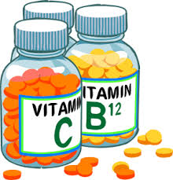

Medical Stream
- Choosing a career in medical field is among the most sought after and satisfying career for the ones fascinated with Science and handling ill people.
- In the past years the area of medical studies have gone through a variety of phases of growth and has at present become so immense that specializations inside are rising every day.
- Some advocacy groups on health issues, such as hypertension and cancer, draw membership from the medical profession and help disseminate information about how to avoid so-called lifestyle diseases.
 PHYSICIAN:
PHYSICIAN:The role of the physician on a health care team is multi-faceted. The physician's responsibilities are based on regulated scopes of practice. The physician is trained to provide leadership in developing and supervising the patient's overall health care plan.
- Physician classes cover everything from basic bodily systems and functions to interacting with patients and responding in ethical situations.
- Students in a physician program first learn about the basics of body systems, causes of diseases, medical ethics and patient interaction.
- Physician courses are offered in programs for medical students in their first and second years of medical school. These courses provide the theoretical knowledge and practical skills students need for the clinical rotations they participate in during the third and fourth years of a doctoral program in medicine.
- In general, physicians employed as medical officers receive an average annual salary ranging between Rs. 300,000 – Rs. 450,000 whereas those employed in general practice centers earns around between Rs. 200,000 – Rs. 875,000per annum.
DENTISTRY:
A dentist is a surgeon who specializes in dentistry—the diagnosis, prevention, and treatment of diseases and conditions of the oral cavity.
A dentist is a surgeon who specializes in dentistry—the diagnosis, prevention, and treatment of diseases and conditions of the oral cavity.
- Dental surgery is among many medical measures that entail synthetically adjusting dentition, or basically surgery of the teeth as well as jaw bones.
- The art and science of Dentistry has many facets that include knowledge of biology, medicine, engineering, materials science, psychology, business, artistry, humanitarianism and leadership.
- A general dentist is also a key figure when considering the overall health of a patient.They are the first ones who can detect different forms of mouth cancer while it is still in the early treatable stages.
- A Dentist earns an average salary of Rs 311,928 per year.
OPTOMETRY:
Previously known as ophthalmic opticians, optometrists are primary health care specialists trained to examine the eyes to detect defects in vision, signs of injury, ocular diseases or abnormality and problems with general health.
Previously known as ophthalmic opticians, optometrists are primary health care specialists trained to examine the eyes to detect defects in vision, signs of injury, ocular diseases or abnormality and problems with general health.
- Optometry is a healthcare profession which involves examining the eyes and applicable visual systems for defects or abnormalities as well as the medical diagnosis and management of eye disease.
- The profession of optometry is a mixture of legal, educational, practice management, service delivery and public health initiatives that is unique to every country and based on culture, educational and regulatory frameworks.
- Optometry is a satisfying career in medical courses in various ways. It is a dynamic and challenging career that offers self-awareness, work flexibility, community respect, money related achievement & unlimited opportunitie
- A career in optometry offers a high salary, job stability, tremendous potential for development and a decent work environment.
- The average pay for an Optometrist is Rs 261,777 per year. A skill in optometrist is associated with high pay for this job.

PHARMACY
Pharmacists play a vital role in the health care system through the medicine and information they provide.
Pharmacists play a vital role in the health care system through the medicine and information they provide.
- A Pharmacist is a health care professional making use of their proficiency in medication to assist people to be aware of the medications that they’re having, the way in which they are of help, and how the way they react.
- The aspirants of this course will also be by the end of their course be able to give advice on health care programmes as they will be more aware of the prescriptions given by doctors. They are also able enough to evaluate drugs and drug use pattern.
- Pharmacist responsibilities include a range of care for patients, from dispensing medications to monitoring patient health and progress to optimize their response to medication therapies.
- The average salary for a Pharmacist is Rs 198,351 per year.
PHYSOTHERAPY:
Physiotherapy has existed as a form of treatment for dysfunctions and disabilities for thousands of years. It is considered a key treatment in the rehabilitation of patients suffering from debilitating conditions as a result of accidents or diseases.
Physiotherapy has existed as a form of treatment for dysfunctions and disabilities for thousands of years. It is considered a key treatment in the rehabilitation of patients suffering from debilitating conditions as a result of accidents or diseases.
- Physiotherapy helps in maintaining optimal physical condition and functions of a human body.
- It entails the evaluation, preservation, reinstatement of the physical function of the body, and is suggested very much for individuals having degenerative disorder, the bodily challenged, sporting people and ones experiencing neurological disorders.
- Physiotherapy has existed as a form of treatment for dysfunctions and disabilities for thousands of years. It is considered a key treatment in the rehabilitation of patients suffering from debilitating conditions as a result of accidents or diseases.
- Physiotherapists get specialisations in the areas such as paediatrics, geriatrics, neurology, cardiorespiratory, and orthopaedics.
- In India, the starting salary ranges from Rs. 5,000 to Rs.30,000 per month.